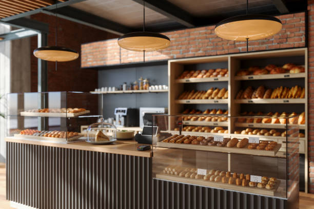
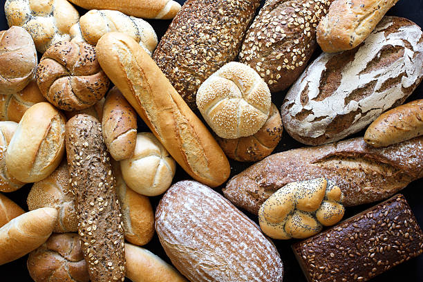

Explore our delicious selection of baked goods.
Indulge in the delightful world of freshly baked goods at our bakery. From fluffy croissants to decadent cakes, our artisanal creations are crafted with the finest ingredients and a touch of love. Savor the rich flavors and irresistible aromas that fill our bakery, where every bite is a moment of pure bliss. Explore our menu and treat yourself to a taste of happiness today.
